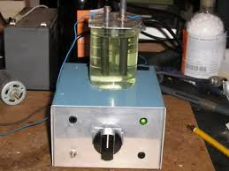
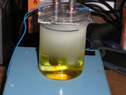
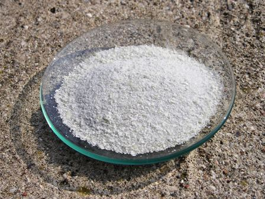

Il post precedente lasciava in sospeso l'uso della celletta: a cosa sarebbe servita?
Eccoci qui per la fine della storia in due puntate: a preparare il bromato di potassio per via elettrolitica!
Ho effettuato la sintesi con opportuni accorgimenti e osservazioni più accurate di quelle del video citato e premetto subito che l'esperienza viene bene ed il prodotto ottenuto (se ben lavato) è puro.
Come partire:
serve (naturalmente oltre alla cella elettrolitica) una soluzione satura di KBr (50 g in 80 ml di acqua), alla quale va aggiunta una puntina di spatola (meno di 1 g) di K2Cr2O7 , visto che tutte le fonti suggeriscono questo particolare per incrementare la resa.

Mettere la soluzione nella cella e cominciato l'elettrolisi regolando la corrente (non la tensione!) dell'alimentatore sugli Ampere voluti.
Ho cominciato con 2 A; sapendo l'area dell'anodo (circa 10 cm2), la densità di corrente iniziale è stata circa 20 A/dm2.
Nelle foto (fatte per prova in un becker prima di usare la cella definitiva) si vede l'inizio dell'ossidazione, con il bromo che si forma all'anodo e scende verso il basso.
Al catodo si svolge abbondantissimo idrogeno. Gli elettrodi in carbone si sono dimostrati adeguati; piccole quantità di carbonio si disgregano e passano nella soluzione, ma in quantità minima e separabile.
Diversamente dal video Youtube, la cella inoltre è stata posta sull'agitatore magnetico e la soluzione accuratamente mescolata durante tutto il tempo dell'elettrolisi.
Omettendo i passaggi redox --> bromuro --> bromo --> ipobromito --> bromato, la reazione riassuntiva è la seguente:
Br- + 3 H2O --> BrO3- + 3 H2
e poichè l'ox del Br passa da -1 a +5, vengono coinvolte sei moli di elettroni per mole di bromuro e quindi (leggi di Faraday) il rapporto bromato/corrente consumata è molto sfavorevole (serve una notevole quantità di corrente per ossidare poco bromuro).
Avviene anche in piccola parte la reazione secondaria:
6 BrO- + 3 H2O --> 2 BrO3- + 4 Br- + 6 H+ + 3/2 O2 + 6 e-
ed effettivamente si nota all'anodo un leggero svolgimento di ossigeno (notevole alla fine, quando la conc. di Br- è bassa, ma ciò non inficia la procedura).

Facendo il calcolo con la legge di Faraday, operando a soli 2 A il tempo necessario per l'ossidazione totale si dimostra troppo lungo (35 ore) e quindi ho aumentato la corrente a 5 A (50 A/dm2) ed elettrolizzato per circa 10 ore; con questa corrente la soluzione si scalda molto per effetto Joule (circa 60-70°) e dopo qualche ora comincia a precipitare anche a caldo il bromato come polvere cristallina.
Durante la procedura l'ho separato tre volte per filtrazione per avere sempre una soluzione abbastanza limpida, anche se sempre giallastra e scura; ho proceduto così per il totale delle 10 ore. Si poteva insistere per ottenere una maggior resa, ma mi sono stufato e fermato qui.
Raffreddata la cella con ghiaccio, ho filtrato e lavato tutti i precipitati raccolti con acqua ghiacciata, per perdere la minor quantità possibile di KBrO3 e nel contempo portar via la maggior quantità possibile di KBr residuo.
Alla fine ho ottenuto 29 g di puro KBrO3; volendo, lo si potrebbe ricristallizzare da acqua bollente per avere cristalli più grossi, ma se ne perde un po' e non è indispensabile.

Considerazioni finali: la sintesi ossidativa è utilitaristica per fini pratici (oltre al KBrO3 si può produrre anche lo iodato KIO3), ma come previsto è molto lunga e dispendiosa in corrente consumata (fa toccare con mano la seconda legge di Faraday: quello che ti frega sono i sei elettron/mole).
Per il massimo rendimento (fino al 97%) la bibliografia consiglierebbe di usare anodi in titanio e catodi in acciaio inox: se riesco a trovare una lamina in titanio magari la differenza, magari trasformando stavolta lo ioduro in iodato...
2 commenti